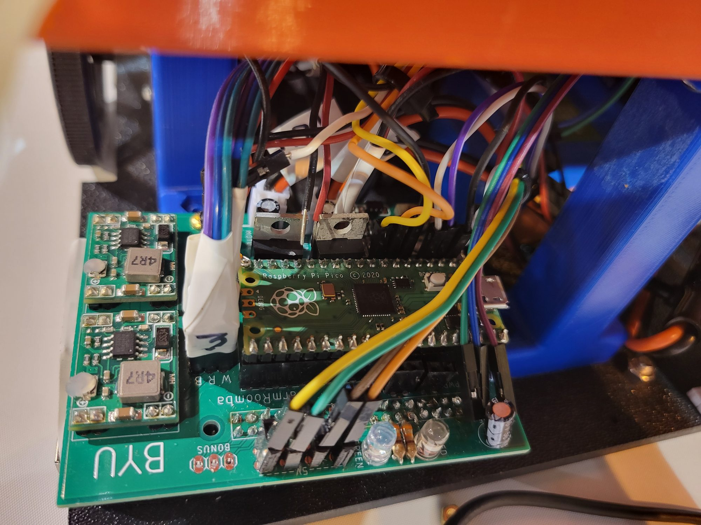

Extracurricular / ASABE robotics competition
FarmRoomba
Leading BYU’s ASABE robotics competition team on an autonomous cotton-harvesting robot.
- Technical team leadership
- Serial communication & PCB troubleshooting
- Project & budget management
- Sponsor reporting & grant deliverables
Team lead, September 2022–July 2023
Perception, mapping, navigation, and manipulation
Six students / BYU’s first entry
My role
Keeping a robot and a team on track.
FarmRoomba was BYU’s entry in the ASABE student robotics competition: an autonomous robot built to harvest cotton by combining perception, mapping, navigation, manipulation, and systems integration. As team lead, I handled both the technical and the organizational side of the project.
- Technical support. Helped sub-teams with serial communication protocols and PCB design, increasing the robot’s reliability.
- Schedule and milestones. Guided sub-teams to meet deadlines and milestones.
- Program management. Maintained financial accounts, project documentation, and competition rule compliance.
- Sponsor relations. Submitted grant reports and deliverables that kept sponsors fully satisfied and secured additional funding for the following year.
System overview
Sense, map, harvest.
The robot had to navigate a simulated cotton arena and harvest ripe bolls with minimal foreign material, a stand-in for selectively harvesting cotton as it ripens rather than losing crop to weather and delayed harvest.
- Perception. An Intel RealSense camera supplied depth images and color maps, used both to locate the robot relative to the arena wall and to classify ripe and unripe bolls with color filtering.
- Software architecture. A state machine sequenced mapping, navigation, and harvesting for each boll.
- Harvesting. An articulated arm pulled cotton with negative pressure from an onboard vacuum, using a rotating orifice plate to focus suction on each boll in turn.
- Lessons for next year. Integrate stepper drivers onto the PCB, reduce single points of failure, consolidate power systems, and integrate subsystems earlier.
ASABE 2023
Competition poster.
The team’s competition poster. Scroll within the viewer to inspect it at full scale.